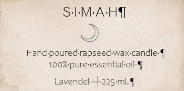
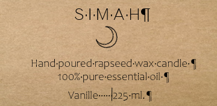
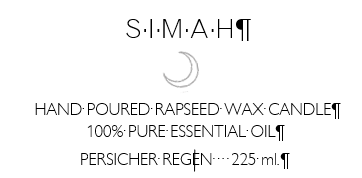

Über meine Kerzen
Die hier gezeigten Kerzen sind alle aus Sojawax. :) Sie wurden alle händisch und mit Liebe hergestellt.
Produkte
Es gibt die unterschiedlichsten Düfte zur Auswahl:
- Lavendel 
- Vanille 
- Persischer Regen 
Informationen
- home
- Lieferung
- Geschäftsbedingungen
- Kontakt